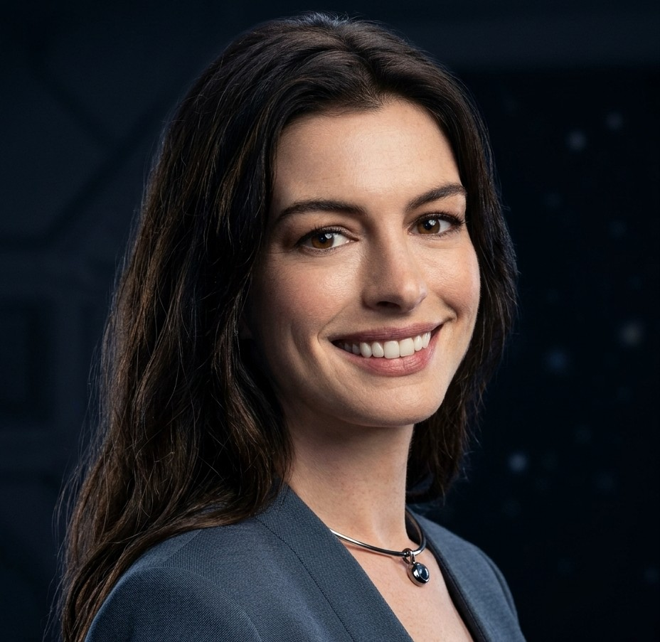
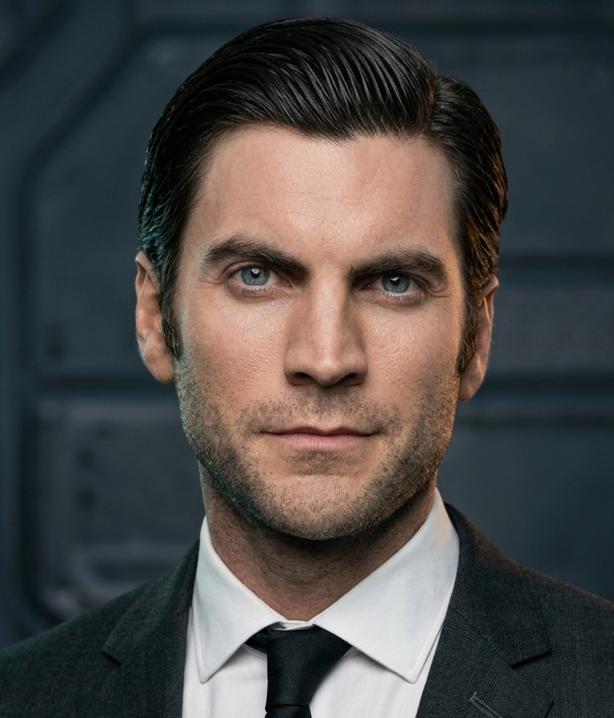
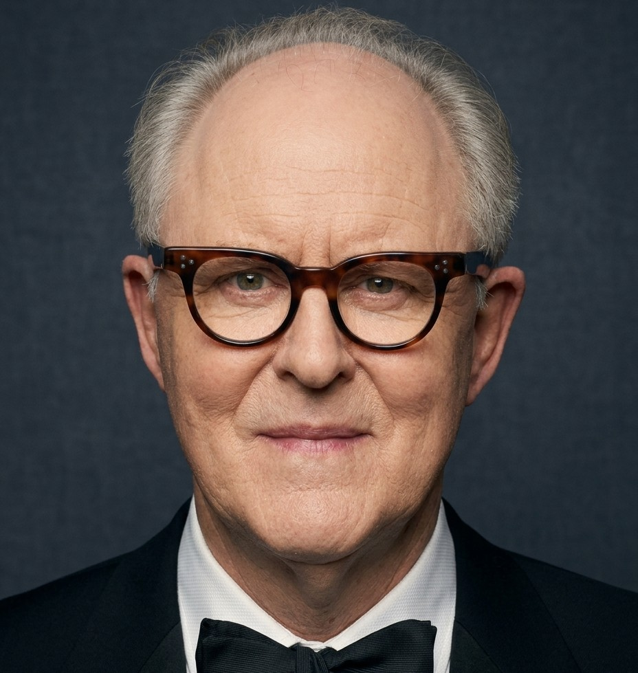

Matthew McConaughey
Joseph Cooper
Ex-piloto da NASA que lidera a missão para encontrar um novo lar para a humanidade.
Christopher Nolan optou por privilegiar, sempre que possível, soluções práticas em vez de depender exclusivamente de computação gráfica. Os planetas de água e gelo foram filmados em locações reais na Islândia, e as naves Endurance, Ranger e Lander ganharam miniaturas de grande escala, combinadas com construções em tamanho real e efeitos digitais. O resultado é um espaço de aparência tangível, no qual cenários reais, modelos físicos e ciência se somam.
Saiba maisOS PERSONAGENS
Conheça os personagens dessa jornada pelo espaço e pelo tempo.
Ex-piloto da NASA que lidera a missão para encontrar um novo lar para a humanidade.

Cientista da missão que procura um planeta capaz de abrigar uma nova colônia.
Filha de Cooper e cientista que busca uma solução para salvar a humanidade.

Curiosa e determinada, acredita que um fantasma tenta se comunicar com ela.
Cientista da NASA que organiza a missão e guarda um segredo sobre o Plano A.

Astronauta isolado em um planeta gelado que esconde a verdade sobre suas condições.
Filho de Cooper, que permanece na Terra e assume as responsabilidades da fazenda.
Tom durante a adolescência, antes de assumir as responsabilidades da família.

Astronauta da Endurance que participa da exploração do planeta oceânico.
Físico da missão que permanece na Endurance enquanto a equipe explora os planetas.
Ator responsável pela atuação e voz do robô que acompanha a equipe.

Avô de Murph e Tom, que ajuda a cuidar da família na fazenda.
Murph no fim da vida, quando finalmente reencontra o pai após a longa jornada.